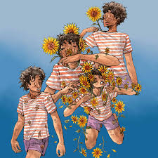

Girassol
O girassol é uma planta herbácea conhecida por sua flor amarela que segue o movimento do sol, simbolizando alegria, vitalidade e energia.
O girassol, originário da América do Norte, é uma flor que simboliza luz e vitalidade, conhecida por sua capacidade de seguir o movimento do sol.
O girassol (Helianthus annuus) é uma planta herbácea originária da América do Norte, conhecida por sua beleza vibrante e simbologia ligada à luz, à vitalidade e à prosperidade. Seu nome deriva do comportamento de suas flores jovens, que acompanham o trajeto do sol ao longo do dia, em um fenômeno chamado heliotropismo A flor do girassol é composta por pequenas flores individuais chamadas de flores do disco, cercadas por pétalas amarelas que atraem polinizadores. Além de seu apelo visual, o girassol tem grande importância econômica e agrícola. Suas sementes são utilizadas na produção de óleo comestível, ração animal e alimentos para consumo humano. O cultivo do girassol é simples, pois é uma planta resistente que se adapta a diferentes tipos de solo e clima, desenvolvendo-se melhor em regiões de clima quente e com boa exposição solar. Essa adaptabilidade faz do girassol uma cultura valiosa em diversas partes do mundo, especialmente em países que buscam alternativas sustentáveis para a produção de óleos vegetais. Simbolicamente, o girassol representa alegria, vitalidade e positividade. Em muitas culturas, é associado à lealdade e à felicidade, sendo frequentemente presenteado para transmitir votos de boa sorte e esperança. Na arte e na literatura, o girassol aparece como símbolo de renovação e perseverança. Seja por sua beleza, utilidade ou significado simbólico, o girassol continua sendo uma das flores mais admiradas e cultivadas no mundo, inspirando artistas, agricultores e amantes da natureza.
Músicas com inspiração no Girassol
O girassol não é famoso atoa! Diversas músicas possuem o girassol em sua composição, dentre elas:
IVYSON - Girassol
Está música foi lançada recentemente pelo cantor Ivyson e já recebeu grande destaque, e é claro, com a citação do belo girassol.
Escute a músicaGirassóis de Van Gogh - Baco exu dos blues
Baco é um cantor que ultimamente ganhou bastante fama, uma de suas obras foi a música Girassóis de Van Gogh, citando o artista Van gogh um grande pintor, autor da obra A Noite estrelada que envolve girássois. De novo a bela flor Girassol destacada.
Escute a música